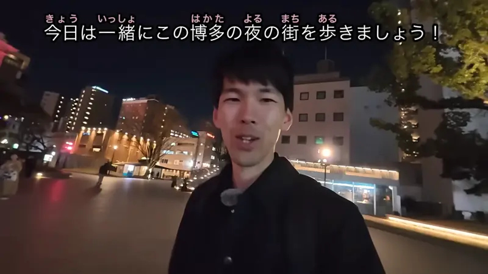
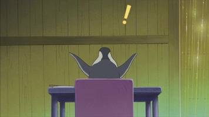
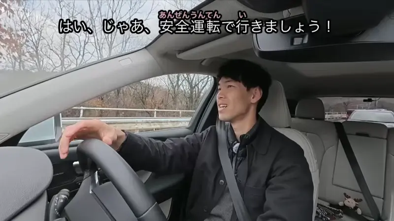
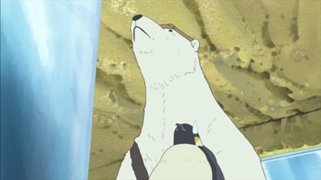
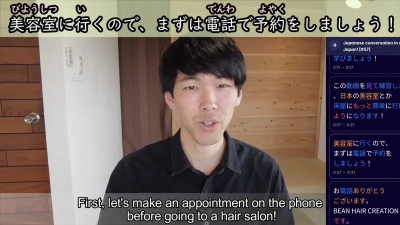

～ましょう

YouTube · video
今日は、一緒にこの博多の夜の街を歩きましょう！
"Today, let's walk around Hakata at night together!" [to her viewers]
ましょう means let's: you suggest doing something, and you're doing it too.
Take the ます form and swap ます for ましょう: 歩きます → 歩きましょう. It answers "what are we doing?": she's taking us along on her walk.
It's the polite version. The casual one is right below.

Shirokuma Cafe · Episode 14
次はかき氷食べよう。
"Next, let's have shaved ice."
Casual: る-verbs swap る for よう (食べる → 食べよう). う-verbs turn the last u sound into o and add う (行く → 行こう). する → しよう, 来る → こよう.
Examples
You and a friend walk past a ramen shop, both starving.
ラーメン食べよう！
"Let's get ramen!"
食べる is a る-verb: る → よう.
CasualA meeting runs late. You look at your coworkers.
そろそろ帰りましょう。
"Let's call it a day."
帰ります → 帰りましょう. そろそろ = "about time".
PoliteIt starts pouring and the station is far.
タクシーで帰ろう。
"Let's take a taxi home."
帰る is a う-verb, so the last sound る (ru) turns into ろ (ro) + う.
CasualThe teacher walks into class.
じゃあ、始めましょう。
"Okay, let's begin."
始めます → 始めましょう.
PoliteHalfway up a hill, your friend is out of breath.
ちょっと休もう。
"Let's rest a bit."
休む → む (mu) turns into も (mo) + う.
CasualWith and without
公園に行きます。
"I'm going to the park." Just telling them your plan.
公園に行きましょう。
"Let's go to the park." You're inviting them to come along.
Sentence mining

YouTube · video
はい、じゃあ、安全運転で行きましょう！
"Alright then, let's drive safely and get going!"
行きます → 行きましょう.

Shirokuma Cafe · Episode 3
シロクマくんの野性が呼び覚まされないうちに、早く行こうよ。
"Let's get going before Polar Bear's wild side wakes up."
行く → 行こう. The よ adds a push: "come on".

YouTube · video
美容室に行くので、まずは電話で予約をしましょう！
"I'm going to the hair salon, so first let's book by phone!"
予約をします → 予約をしましょう.